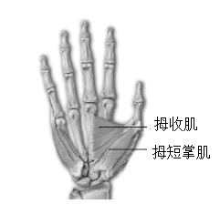

2022年北京市中考生物真题 · 选择题 第16、17、18、19、20题 · 对应解析
16. 握手是人与人之间表示友好的一种礼仪。握手时，大拇指要向手心运动。如图是人右手掌心面骨骼及部分肌肉示意图，下列相关叙述错误的是

A. 拇短掌肌两端附着在同一块骨上B. 握住手时，拇收肌处于收缩状态
C. 握手时，骨骼肌牵拉骨绕关节运动D. 握手动作在神经系统调节下完成
【答案】A
【解析】
【分析】骨骼肌包括肌腹和肌腱，肌腹是骨骼肌中间较粗的部分，受刺激而收缩；肌腱是骨骼肌两端较细的部分，跨关节附在不同的骨上，有固定作用。骨骼肌有受刺激而收缩的特性，当骨骼肌受神经传来的刺激收缩时，就会牵动着它所附着的骨，绕着关节转动，于是躯体就产生了运动。在运动中，骨起杠杆作用，关节起支点作用，骨骼肌收缩产生动力。运动并不是仅靠运动系统来完成，它需要神经系统的控制和调节，它需要能量的供应，因此还需要消化系统、呼吸系统、循环系统等系统的配合。
【详解】A．拇短展肌两端附着在不同的两块骨上，A错误。
B．握住手时，大拇指向掌心靠近，拇收肌处于收缩状态，B正确。
C．握手时，大拇指需要向掌心靠近，此过程是骨骼肌牵拉骨绕关节运动产生的，C正确。
D．运动动作的产生是在神经系统的调节下，其他系统的配合下完成的，D正确。
故选A。
17. 植物的下列繁殖方式不属于无性生殖的是
A. 播种玉米种子B. 嫁接苹果枝条C. 扦插柳树枝条D. 兰花组织培养
【答案】A
【解析】
【分析】无性生殖：不经过两性生殖细胞的结合，由母体直接产生新个体，这种生殖方式称为无性生殖。无性生殖产生的后代，只具有母体的遗传特性。如植物中的扦插，嫁接等繁殖方式。
有性生殖：由两性生殖细胞结合形成受精卵，再由受精卵发育成新个体的生殖方式属于有性生殖。有性生殖的后代，具有双亲的遗传特性。如植物用种子繁殖后代。
【详解】结合分析可知，播种玉米种子的繁殖方式属于有性生殖。嫁接、扦插和组织培养都属于无性生殖。
故选A。
18. 2022年4月，中国国家植物园在北京正式揭牌，其标志中包含了我国特有珍稀裸子植物银杏和水杉等元素（如图）。这两种植物的基本特征是

A. 具有假根、茎和叶的分化B. 不具有输导组织
C. 种子裸露，无果皮包被D. 生活在阴湿环境
【答案】C
【解析】
【分析】银杏和水杉是裸子植物，裸子植物的种子没有果皮包被，种子裸露在外面。
【详解】A．具有假根、茎和叶的分化的植物类群是苔藓植物，A不符合题意。
B．蕨类植物、裸子植物、被子植物都具有输导组织，B不符合题意。
C．银杏和水杉是裸子植物，裸子植物的种子没有果皮包被，种子裸露在外面，C符合题意。
D．裸子植物不一定生活在阴湿环境，可以广泛分布在森林中，D不符合题意。
故选C。
19. 正常女性体细胞染色体的组成是（ ）
A. 22条常染色体+XB. 22对常染色体+Y
C. 22对常染色体+XYD. 22对常染色体+XX
【答案】D
【解析】
【分析】人的体细胞内的23对染色体，有一对染色体与人的性别有关，叫做性染色体；男性的性染色体是XY，女性的性染色体是XX。
【详解】男女体细胞中都有23对染色体，有22对染色体的形态、大小男女的基本相同，其中有一对染色体在形态、大小上存在着明显差异，这对染色体与人的性别决定有关，称为性染色体。男性体细胞的性染色体中，较大的一条命名为X染色体，较小一条称为Y染色体，因此正常男性体细胞染色体组成的是22对+XY；女性体细胞中的性染色体形态大小基本相同，称为XX染色体，因此正常女性体细胞中染色体的组成是22对+XX。
故选D。
【点睛】男女体内染色体的组成：男性：22对+XY，女性：22对+XX。
20. 紫花苜蓿是一种优质牧草。我国航天员将其种子带入太空，使种子在射线和微重力等因素作用下发生变异，选育新品种。该育种方式从根本上改变了紫花苜蓿的
A. 生活环境B. 形态结构C. 遗传物质D. 生活习性
【答案】C
【解析】
【分析】太空育种即航天育种，也称空间诱变育种，是将作物种子或诱变材料搭乘返回式卫星送到太空，利用太空特殊的环境诱变作用，使种子产生变异，再返回地面培育作物新品种的育种新技术。
【详解】太空育种即航天育种，也称空间诱变育种，是将作物种子或诱变材料搭乘返回式卫星送到太空，利用太空特殊的环境诱变作用，使种子产生变异，再返回地面培育作物新品种的育种新技术。太空育种主要是通过强辐射，微重力和高真空等太空综合环境因素诱发植物种子的遗传物质发生变异。因此太空育种能诱发生物产生可遗传的变异。因此，紫花苜蓿是一种优质牧草。我国航天员将其种子带入太空，使种子在射线和微重力等因素作用下发生变异，选育新品种。该育种方式从根本上改变了紫花苜蓿的遗传物质。
故选C。